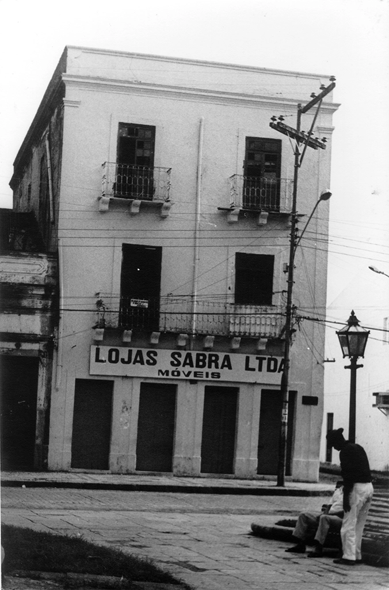
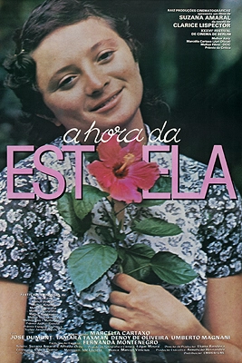

Clarice Lispector
Biografia
Clarice Lispector nasceu na cidade de Tchetchelnik, na Ucrânia, em 10 de dezembro de 1920. Era filha de Pinkouss e Mania Lispector, casal de origem judaica, fugitivos da perseguição durante a Guerra Civil Russa. Fixaram residência em Maceió, Alagoas, onde morava Zaina, irmã de sua mãe. Posteriormente, mudaram-se para a cidade de Recife, no estado de Pernambuco.

Clarice aprendeu a escrever e ler desde muito cedo, adquirindo desde logo o hábito de redigir contos. Estudou na melhor escola pública da cidade, o Ginásio Pernambucano, para além de ter participado de uma escola de idiomas, João Barbalho.
Com 12 anos, mudou-se para o Rio de Janeiro, na Barra da Tijuca, onde adentrou no Colégio Silva Leite e concluiu o ginasial.
Em 1941, estudava na Faculdade Nacional de Direito e trabalhou na redação da “Agência Nacional”; depois, migrou para o jornal “A Noite”. Em 1944, concluiu a faculdade, recebendo seu bacharel apenas em 1952.
Durante o mesmo ano, publicou seu primeiro livro, “Perto do Coração Selvagem”, retratando uma visão aprofundada do mundo adolescente e inaugurando uma nova tendência literária em nosso país. O romance surpreendeu a crítica à época, rompendo a tradicional narrativa composta por começo, meio e fim e fundindo a prosa à poesia.
Desta maneira, a obra recebeu o Prêmio Graça Aranha e um amplo reconhecimento por parte do público. Em 1944, viajou junto de seu marido diplomata para uma Europa em guerra, atuando como enfermeira num voluntariado no hospital da Força Expedicionária Brasileira.
Em 1946, de volta ao Brasil, publica “O Lustre”; após uma longa permanência na Suíça, lança “A Cidade Sitiada”; neste mesmo ano, nasce seu primeiro filho, Pedro. Em 1952, decide escrever em forma de contos, reunindo-os em sua obra Alguns Contos.
Após seis meses na Inglaterra, em 1954, o segundo filho do casal — Paulo — nasce. Seu livro Perto do Coração Selvagem é traduzido para o francês na mesma época.
Em 1959, separa-se de seu marido e retorna ao Rio de Janeiro, onde emprega-se no “Jornal Correio da Manhã”, responsabilizando-se pela coluna “Correio Feminino”.
Um ano depois, começa a trabalhar no “Diário da Noite” com a coluna “Só Para Mulheres”. Nesse ínterim, expõe “Laços de Família”, que conquistou o Prêmio Jabuti da Câmara Brasileira do Livro.
Sua primeira produção infantil foi “O Mistério do Coelhinho Pensante”, o qual recebeu o Prêmio Calunga, da Campanha Nacional da Criança.
Com uma vida isolada e saúde deteriorada pelo hábito do cigarro, que lhe rendeu diversas cirurgias devido ao fato de Lispector haver dormido com ele em certa ocasião, entra no Conselho Consultivo do Instituto Nacional do Livro e ganha o primeiro prêmio do X Concurso Literário de Brasília por sua bibliografia como um todo. Em 1977, sua última obra ainda em vida é publicada: “A Hora da Estrela”. Clarice faleceu no mesmo ano, vítima de um câncer de ovário.
Obras
Principais Romances:
— A Paixão Segundo G.H.: Romance misterioso o qual descreve uma crise existencial de uma mulher que ocorre logo após ela se deparar com uma barata, personagem secundária da obra. O fluxo de consciência — uma narração em primeira pessoa e no presente que objetiva emular o pensamento em tempo real — inicia suas reflexões a partir da demissão da empregada de G.H., Janair. Inquieta com seus pensamentos e a incerteza de sua própria identidade, busca refugiar-se na limpeza dos cômodos, sendo o primeiro o quarto da empregada. A protagonista imagina um local sujo, mas surpreende-se com sua limpeza excepcional e uma pintura rupestre que simboliza o desejo de demarcação de uma presença histórica pelas mulheres negras. Desta maneira, as investigações existenciais fundem-se com a crítica social numa das mais importantes produções de Lispector.
— A Hora da Estrela: Romance narrado por Rodrigo S.M., narrador-personagem, um escritor à espera de seu fim derradeiro. O autor projeta seus sentimentos sobre a protagonista Macabéa, uma jovem ignorante, alienada, pobre, virgem, feia, tímida e solitária a qual é também uma nordestina órfã de pai e de mãe. Criada por uma tia e sofrendo maus-tratos, muda-se para o Rio de Janeiro e arranja um emprego como datilógrafa. Todavia, apenas não é despedida por comiseração de seu patrão, Raimundo. Nesta cidade, divide uma casa com quatro moças, chamadas “as quatro Marias”. Apesar de sua falta de atração estética, possui um breve relacionamento com o nordestino Olímpico de Jesus Moreira Chaves, sendo logo trocada por Glória, mais inteligente e bela.
Em certo momento, vai à cartomante para conhecer sua sorte na vida, saindo de lá bastante alegre. Ao final, a história é concluída com seu atropelamento por uma Mercedes-Benz e sua “Hora da Estrela”, onde em seu derradeiro momento final alcança uma centelha de grandeza e atenção, sentindo-se uma “estrela”.
O livro serviu como um espelho para as preocupações de Lispector antes de seu falecimento, tendo sido inclusive adaptado para o cinema em 1985.

— Perto do Coração Selvagem: Seu romance de inauguração. Retrata a história de Joana, uma jovem impulsiva, amoral e peculiarmente reflexiva. Órfã de mãe e de pai, é criada pelos tios, incomodando por seus questionamentos — como “o que acontece depois que se é feliz” — e sua aversão pela bondade. Sua narração transita do presente, enquanto adulta, ao passado, levando àquele novo efeito de quebra no fluxo temporal. A obra é marcada mais por seus pensamentos que pelas ações épicas em si.
Textos escolhidos
“Tudo no mundo começou com um sim. Uma molécula disse sim a uma molécula e nasceu a vida. Mas antes da pré-história havia a pré-história da pré-história e havia o nunca. E havia o sim. Sempre o sim. Eu não sei de quê, mas sei que o universo fala”.
— Clarice Lispector, “A Hora da Estrela”.
Referências bibliográficas
-
Instituto Moreira Salles — Clarice Lispector: Vida
-
Instituto Moreira Salles — Acervo Clarice Lispector
-
Brasil Escola — Clarice Lispector
-
Toda Matéria — Clarice Lispector: vida, obra e frases
-
Toda Matéria — A Hora da Estrela
-
Brasil Escola — A Hora da Estrela
-
Enciclopédia Itaú Cultural — Clarice Lispector